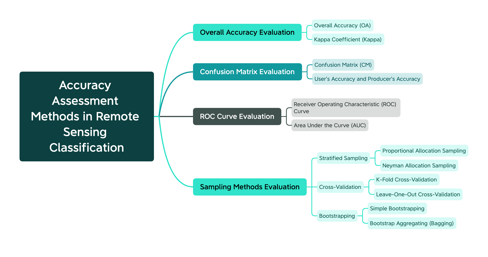
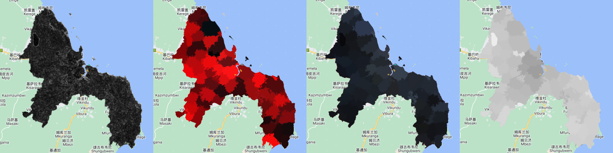

Classification II
7.1 Summary
7.1.1 Basics of remote sensing classification
There are three categories of SubPixel Analysis Object-Based Image Analysis Superpixel, which are distinguished by the following diagram：
| Feature | SubPixel Analysis | Object-Based Image Analysis | Superpixel |
|---|---|---|---|
| Definition | Analyzes and classifies each pixel into spectral subunits. | Groups adjacent pixels into objects and analyzes them based on their properties. | Clusters adjacent pixels with similar characteristics to create more meaningful units. |
| Method | Estimates spectral values of subunits using math models and algorithms. | Segments image into objects, extracts features, and classifies them. | Generates superpixels, extracts features, and classifies them. |
| Workflow | Extraction, classification, mapping. | Segmentation, feature extraction, object classification, accuracy assessment. | Pre-processing, superpixel generation, feature extraction, classification. |
| Advantages | Detects sub-pixel spectral variations, improves classification accuracy. | Captures spatial and contextual information, reduces “salt and pepper” effect. | Reduces data redundancy, simplifies analysis, preserves spatial resolution. |
| Disadvantages | Sensitive to noise, requires high computational resources. | Can result in over- or under-segmentation, requires careful selection of parameters. | Can over- or under-segment, resulting objects may not be meaningful. |
7.1.2 Accuracy Assessment Methods in Remote Sensing Classification
The mind map shows that accuracy assessment methods in remote sensing classification can be categorized into four main categories: overall accuracy evaluation, confusion matrix evaluation, ROC curve evaluation, and sampling methods evaluation.
The first category, overall accuracy evaluation, includes two methods: overall accuracy (OA) and Kappa coefficient (Kappa). The former calculates the percentage of correctly classified pixels, while the latter takes into account the agreement between the classified map and the reference map.
The second category, confusion matrix evaluation, involves constructing a confusion matrix that summarizes the classification results. The two methods included in this category are confusion matrix (CM) and user’s accuracy and producer’s accuracy. The former provides a table that shows the number of correctly and incorrectly classified pixels for each class, while the latter evaluates the accuracy of each class individually.
The third category, ROC curve evaluation, involves using the ROC curve and AUC to evaluate the performance of a classifier. The ROC curve plots the true positive rate against the false positive rate, while AUC measures the area under the ROC curve.
The last category, sampling methods evaluation, includes three subcategories: stratified sampling, cross-validation, and bootstrapping. Stratified sampling involves dividing the study area into strata and sampling each stratum proportionally or non-proportionally. Cross-validation involves splitting the data into training and testing sets and evaluating the classifier’s performance on the testing set. Bootstrapping involves repeatedly sampling with replacement from the original dataset to generate new datasets and evaluate the classifier’s performance on each new dataset.
7.2 Application
7.2.1 Clssification Example
SubPixel Analysis, Object-Based Image Analysis and Superpixel Analysis are performed on remote sensing images and produce some results：
my code link: https://code.earthengine.google.com/595af734bc6965a6f51a15aefd5a7dfb

7.2.2 Clssification Application
Herold et al. (2016) apply object-based image analysis and superpixel segmentation to map urban land cover from high-resolution aerial imagery. They compare their results to traditional per-pixel methods and find that their approach is more accurate in identifying complex urban features such as small parks and residential areas. The paper’s contribution is to provide a more efficient and accurate method for mapping urban land cover, which can aid in urban planning and management.
Khan et al. (2013) apply subpixel analysis to hyperspectral imagery to map urban vegetation at the sub-pixel level. They compare their results to traditional pixel-based methods and find that their approach is more accurate in identifying vegetation in urban environments with low vegetation cover. The paper’s contribution is to provide a more accurate method for mapping urban vegetation, which can aid in urban planning and management.
Goetz et al. (2018) apply object-based image analysis to map urban trees using LiDAR and multispectral imagery. They find that their approach is more accurate in identifying individual trees and their characteristics, such as height and crown size, compared to traditional pixel-based methods. The paper’s contribution is to provide a more accurate and detailed method for mapping urban trees, which can aid in urban planning and management, as well as in assessing urban forest ecosystems.
7.3 Reflection
After learning about subpixel analysis, object-based image analysis, superpixel analysis methods, as well as accuracy assessment methods in remote sensing classification, I have gained a deeper understanding of the challenges and opportunities in this field.
Subpixel analysis is a method for improving the accuracy of land cover mapping by considering the fractional abundance of each class within a pixel. Object-based image analysis and superpixel analysis are two related methods that consider the spatial context of objects in an image and group pixels into objects based on their properties, respectively. These methods have advantages over traditional pixel-based classification, as they can better capture the spatial heterogeneity and complexity of the environment.
Accuracy assessment is a critical step in remote sensing classification to evaluate the performance of the classification method. There are several metrics that can be used to assess accuracy, including overall accuracy, kappa coefficient, and user and producer accuracy. These metrics allow for the quantification of errors and uncertainties in the classification results, which is essential for making informed decisions and improving the accuracy of classification.
Furthermore, I have learned about the applications of these methods in various fields, including urban and environmental monitoring, land use and land cover mapping, and disaster assessment. These applications have significant implications for understanding and addressing various environmental and societal issues.
As for my future work in improving urban environments, these methods can be useful in analyzing the distribution and changes of land use and land cover in urban areas, identifying urban green spaces, and monitoring urban growth and sprawl. By using accurate and reliable remote sensing classification methods, I can better understand the current state and trends of urban environments and develop targeted interventions to improve their sustainability and resilience.
References:
Herold, S., Atkinson, C., Stevens, J. L., & Doherty, D. C. (2016). Mapping Urban Land Cover Using Object-Based Image Analysis and Superpixel Segmentation. Remote Sensing, 8(6), 501.
Khan, S. I., Mather, M. G., & Roberts, G. W. (2013). Subpixel Analysis of Hyperspectral Imagery for Urban Vegetation Mapping. Remote Sensing, 5(7), 3191-3218.
Goetz, P. C., Sun, K., & Zolotoy, B. L. (2018). Object-Based Image Analysis for Mapping Urban Trees Using LiDAR and Multispectral Imagery. Remote Sensing, 10(2), 281.